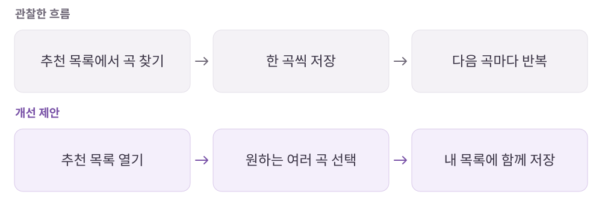
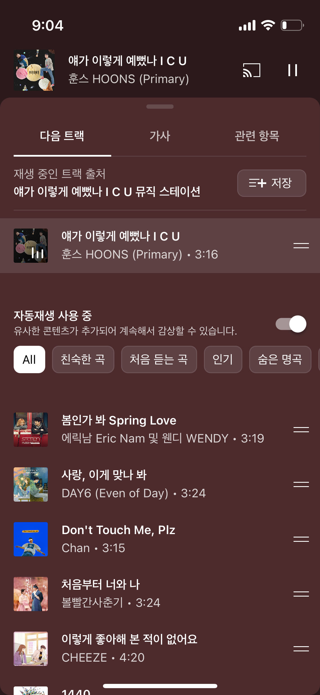
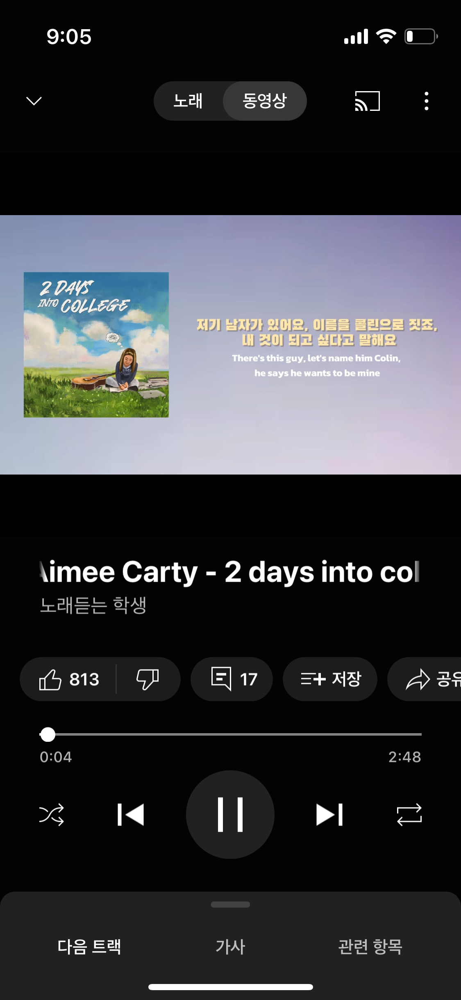

유튜브 뮤직
추천받은 곡을 저장·다시 찾기·제외하는 기능을 어떻게 개선할까?
추천 음악과 영상 기반 콘텐츠를 함께 즐기는 음악 스트리밍 서비스.
학습 목적추천 목록과 음원·영상 전환이 음악 탐색을 돕는 방식을 살폈습니다. 여러 곡을 함께 저장하기, 이전 추천으로 돌아가기, 원치 않는 음악·아티스트 제외를 중심으로 개선안을 정리했습니다.
개인 학습 기록 · 관찰한 경험, 기획 의도에 대한 해석, 개선 제안을 구분해 정리했습니다. 수치·요금·정책은 분석 당시 조사한 자료이며 현재 기준이나 직접 만든 성과가 아닙니다.
01사용자와 해결 방향
누구를 위한 서비스인가새로운 음악을 발견하면서도 자신이 원하는 곡과 재생 흐름을 통제하고 싶은 청취자.
Why · 사용자가 찾는 이유
내 취향에 맞는 새로운 음악을 쉽게 찾고 싶다. 정식 음원 외의 커버·공연 영상 속 음악도 여러 앱을 오가지 않고 듣고 싶다.
What · 제공 경험과 해결 방식
개인화 추천과 재생목록으로 음악을 발견하고 저장해 듣는 경험을 제공한다. 음원과 영상을 함께 탐색하고 전환할 수 있어 콘텐츠마다 서비스를 바꾸는 수고를 줄인다.
검색하지 못하는 순간까지 포함한 니즈
유사 곡·같은 아티스트를 더 듣고 싶은 경우, 정식 발매 전 음악이나 비데뷔 아티스트의 영상만 있는 경우, 딱히 고를 곡은 없지만 새 음악은 듣고 싶은 경우를 구분했다. 듣기·뮤직비디오 보기·공유 사이의 전환도 하나의 이용 맥락으로 봤다.
02핵심 기능과 벤치마킹
- 추천 재생목록
- 직접 검색하지 않아도 비슷한 취향의 음악을 발견.
- 음원·영상 전환
- 같은 콘텐츠를 듣거나 보는 방식으로 전환.
- 나만의 목록
- 추천된 음악을 자신의 취향에 맞게 골라 저장.
03사용자 흐름과 기획 의도
곡을 하나씩 담는 반복을 줄이는 제안

관찰한 경험
- 유사 음악 추천과 영상·오디오 전환이 탐색 부담을 줄이는 방식을 살펴봤습니다.
- 곡의 복수 선택, 이전 추천 목록으로 돌아가기, 원하지 않는 추천 제외에서 불편을 기록했습니다.

크게 보기 ↗
크게 보기 ↗검색 중심에서 추천 중 선택으로
직접 곡을 검색해 목록을 만드는 순서에서, 추천 재생목록을 먼저 듣고 마음에 드는 곡·목록을 저장하는 순서로 중심이 이동한다고 해석했다. 유튜브 영상의 오디오와 비디오를 한 서비스에서 전환해 별도 이동을 줄이는 점도 분석했다.
왜 이렇게 설계했을까 · 나의 해석
- 추천이 편리해질수록 마음에 드는 것만 남기고 원치 않는 것을 조절하는 기능도 중요해진다고 봤습니다.
- 개인화는 시스템이 골라주는 정확도뿐 아니라 사용자가 취향을 수정할 수 있는 경험이라고 정리했습니다.
04문제와 개선 제안
Pain Point · 걸리는 지점
- 원하는 여러 곡을 한 번에 선택해 저장하기 어려웠다.
- 다른 음악으로 이동하면 직전 추천 트랙의 맥락으로 돌아가기 어려웠다.
- 유사 음악이나 아티스트를 제외하는 피드백이 부족하다고 느꼈다.
내가 바꿔본다면
- 원하는 곡을 복수 선택해 저장할 수 있는 동선.
- 이전 추천 트랙으로 돌아가기와 유사 음악·아티스트 관심 없음 피드백 제공.
05장점과 아쉬운 지점
좋았던 점
- 새로운 곡 발견과 영상·음원 이동이 유기적이다.
아쉬운 점 · 더 살필 점
- 추천이 편리해도 저장·되돌리기·제외 같은 사용자의 결정권이 필요하다.
추천의 장점과 제어의 부족
- 장점
- 새 음악과 잊고 있던 음악 재발견, 추천 목록 필터, 유기적인 음원·영상 전환. 당시 프리미엄 연계 이용 혜택도 관찰.
- 아쉬움
- 초기 사용자에게 복잡한 화면과 가사 글자 크기·특정 구간 지정 기능의 부족. “가사 없음”을 모든 가사 기능의 부재로 일반화하지 않고 당시 비교한 세부 기능의 차이로 정리.
06내가 주목한 점
기획에 가져갈 기준
- 개인화 서비스에서는 추천의 정확도와 사용자가 수정할 수 있는 범위를 함께 설계할 것.
- 재생 목록의 이력과 현재 상태를 복구하는 기준을 구분할 것.